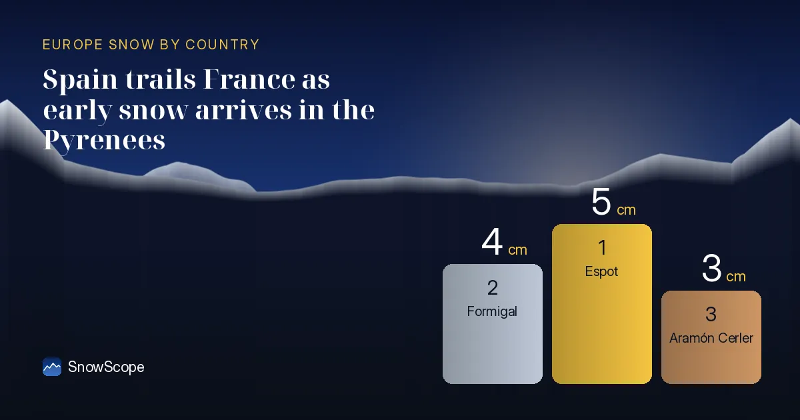
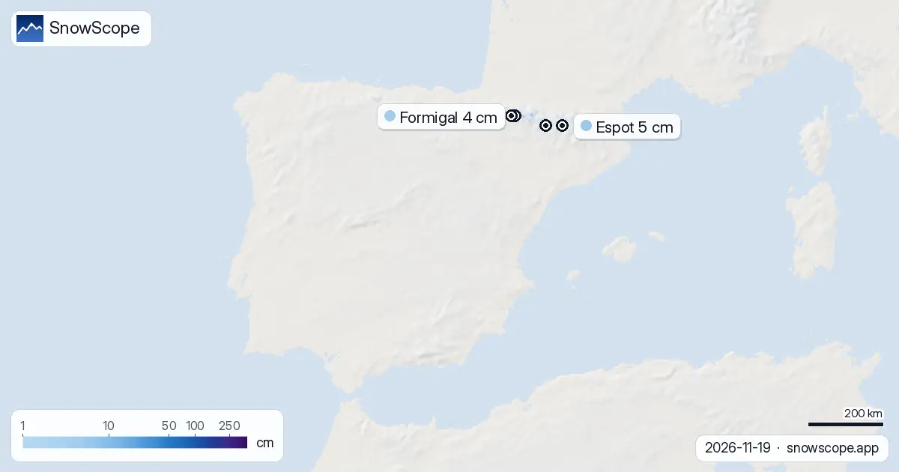
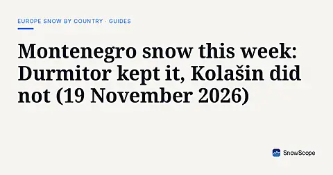

Spain trails France as early snow arrives in the Pyrenees
Snow cover in Spain stands at nearly nothing right now, while across the border in France the white share is already at 13%. Early November flakes are reaching the Spanish high peaks, but the season is still taking shape.
See the live snow forecast for Espot in the SnowScope appSnow depth, powder alerts and the 3D map, free.
Spain versus France: a sharp gap
On the ground today, Spain has snow on a tiny fraction of its high mountains—around 0.3%—while France already shows white cover on 13% of comparable terrain. This gap tells a story common to early November in the Pyrenees: France's Atlantic-facing slopes caught better early-season moisture, and the Alps got more of it than the Spanish side. The Spanish Pyrenees sit in a rain shadow relative to the Atlantic, so they lag behind when weather systems sweep in from the west.
What matters for skiers is that the Spanish resorts are starting to pick up snow now. Espot, Formigal, Aramón Cerler, and Candanchu all measured new snow in the past 72 hours, with the best results in the Spanish Pyrenees—26 cm fell across that region. It is early season and thin, but the pattern is shifting.
| Country | White | Deepest resort | Next 7 days |
|---|---|---|---|
| Spain | 0 % | Espot | 5 cm |
| Andorra | 7 % | Ordino-Arcalis | 9 cm |
| France | 13 % | Orelle | 125 cm |

The Spanish Pyrenees lead the country
The Spanish Pyrenees have gathered 26 cm of new snow in the last three days, by far the best performance in Spain. The Galician mountains saw 7 cm, and the Cantabrian Mountains managed 5 cm. Height matters: snow fell mainly above 2000 m, where our model shows 9% of the terrain is covered. Above 2500 m, the average depth is 3 cm and 46% of the high ground has some white.
On the ground, Espot is leading Spanish resorts with 5 cm depth measured at the station, though Formigal, Aramón Cerler, Candanchu, and Tavascan all have 3–4 cm. These are early-season depths—thin enough that rocks and terrain can show through, especially on south-facing slopes where the sun is still strong in November. Skiers heading up should check local reports and pick their lines with care.
France still leads by far
Across the border, France's leader Orelle sits at 130 cm—25 times deeper than Espot. Even Andorra's best slope, Ordino-Arcalis, has 6 cm, so the contrast is not just Spain versus France but Spain versus everyone on the same range. The reason: France's Atlantic systems bring moisture from the Bay of Biscay, and the northern Alps and Pyrenees sit square in that path. Spain's dry mountains get the leftovers.
Snow arrives this week
The outlook is better. Our model forecasts 1 cm in the next three days, rising to 5 cm over the next seven days. The key date is 25 November, when 9 cm could fall. After that, the second week shows another round: 22 cm in week one (which ends on 22 November) and 20 cm in week two (27 November to 3 December). These are modelled estimates for the high mountains, not measured; they will narrow as the forecast updates.
By height, the snow will keep landing above 2000 m, where it will stay. Lower elevations will see rain or sleet for now.
What the trend shows
Three days ago, Spain had 310 km² of snow. That fell to 240 km² on the 17th, then recovered to 280 km² on the 18th. Today we see a sharp jump to 530 km². This is not false alarm—it reflects the first real dump hitting the high ground in the past 24 hours. The snow is real, but still patchy and mainly above 2000 m. As more falls this week, coverage will climb and depths will thicken.
Where the snow sits by height
Below 2000 m: nothing. The band from 2000–2500 m shows 9% cover and 0 cm mean depth—snow there is sparse and often melting. Above 2500 m is where skiers should look: 46% coverage and 3 cm average. This band includes the summits of Espot (2290 m), Formigal (2264 m), Aramón Cerler (2618 m), Candanchu (2238 m), and Tavascan (2196 m). The highest peaks—Aramón Cerler and those nearby—hold the best snow right now.
Tips for skiers
- Head to the Spanish Pyrenees if you are going this week; the Galician and Cantabrian mountains lag well behind. Stick to runs above 2000 m; below that, snow is thin or wet.
- Espot and Formigal lead the forecast for the next three days (3–8 cm incoming); Aramón Cerler and Candanchu are close behind. All four should see real accumulation by 22 November.
- Watch the official avalanche bulletin before skiing off-piste; fresh snow on steep slopes carries risk in early season, even when depths look modest.
- South-facing slopes will soften fast in the November sun. North-facing terrain holds the best snow through the day.
- Sunday 25 November is the snowiest day in the forecast (9 cm). Plan around that date if you can; depths will be thicker and stability higher than they are now.
About these numbers
Resort snow depths are the deepest snow on the resort's upper slopes from the SnowScope snow model (about 1 km, run of 19 November); they are estimates for an area, not a measurement at one point. Station values are measurements on the date shown. Forecasts can change. Always read the official avalanche bulletin before going off-piste.
Cite this report
For research, teaching or the press: the numbers and charts are free to reuse under CC BY 4.0 with this citation.
SnowScope (2026), Spain trails France as early snow arrives in the Pyrenees, https://snowscope.app/blog/en/2026/11/spain-snow-vs-neighbours-19-november-2026.html, accessed 2026-11-19
SnowScope (Atlas Labs). (2026, November 19). Spain trails France as early snow arrives in the Pyrenees. SnowScope snow reports. https://snowscope.app/blog/en/2026/11/spain-snow-vs-neighbours-19-november-2026.html
BibTeX
@misc{snowscope2026spainsnowvsneighbours19n,
author = {{SnowScope (Atlas Labs)}},
title = {Spain trails France as early snow arrives in the Pyrenees},
year = {2026},
month = nov,
howpublished = {\url{https://snowscope.app/blog/en/2026/11/spain-snow-vs-neighbours-19-november-2026.html}},
note = {Published 2026-11-19 13:02 UTC; accessed 2026-11-19}
}· CC BY 4.0 · Methods, data and tools →
Espot: snow and temperature by height, this winter vs last (tools) →
Follow Espot
Free: a message when fresh snow is coming, and the forecast every morning.
More snow reports

Savin Kuk above Žabljak picked up 22 cm of snow from 13 to 19 November and still has 6 cm today. Kolašin 1450 and 1600 are bare. The week day by day, and the next chances.

Pick a region, dates, budget and what matters; get every resort ranked with the likely snow at the start, the pass, hotel and food per person, chalets to book, and a game mode.

Up to 30 cm of snow fell on northern Velebit and Bjelolasica on Friday 13 November 2026. By Tuesday it was gone. Day by day, what the mountains kept, and when snow comes back.